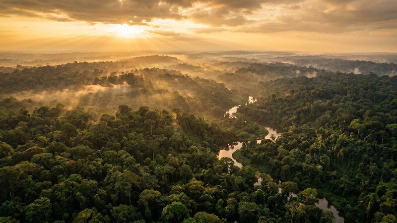
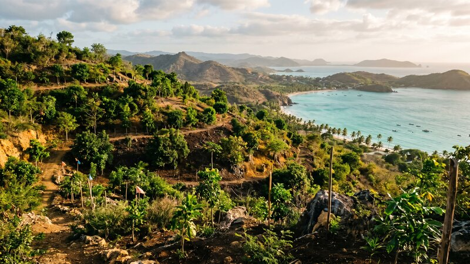
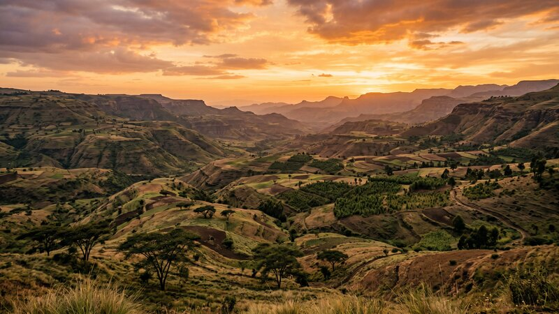

Where We Work
Our Projects
Active Pipeline
Current Projects
Sovereign-scale restoration programmes currently in development and early implementation.

D.R. Congo
Massive primary reforestation across one of the world's most critical forest ecosystems. The Congo Basin holds the second-largest tropical rainforest on Earth — GEP is developing a multi-phase programme to restore degraded primary forest corridors, support local communities, and generate durable carbon and biodiversity outcomes.

Haiti
Integrated reforestation and circular economic development targeting some of the most severely deforested land in the Caribbean. The programme focuses on watershed recovery, coastal protection, food system resilience, and long-term community stewardship.

Ethiopia
Large-scale afforestation and reforestation across degraded highland and lowland landscapes. The programme integrates food security, rural livelihoods, and watershed restoration — aligned with Ethiopia's ambitious national tree-planting and climate resilience agenda.


Stakeholders & Investors
Access Project Data
Registered stakeholders, investors, and carbon credit buyers can access project documentation, progress reports, and verification data through the GEP Project Portal.